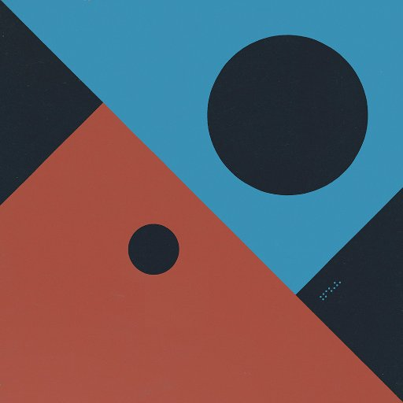

About Me
My name is Leon Barnard. I'm a dad, husband, and writer/designer. I work at Balsamiq, maker of the best little wireframing tool around. I help people and technology get along better.
I write and speak about #documentation, #UX, #wireframing, #remote work, and #web technologies. Sometimes I make stuff.
Writing
- Hugo Templates for WordPress Designers - - Treehouse Blog
- What is Wireframing and How It Can Improve Communication with Freelance Developers - - Codementor Blog
- Balsamiq Docs Case Study, Part 3: Lists Get a Makeover - - Docs Like Code
- Balsamiq Docs Case Study, Part 2: Animated GIFs Pause and Play - - Docs Like Code
- Balsamiq Docs Case Study, Part 1: Multiple Product Versions - - Docs Like Code
- Wireframing for Beginners - - UX Mastery
- Edit the Balsamiq Docs! - - Balsamiq UX Blog
- From the Classroom to the Cubicle: UX in the Real World - - UX Mastery
- Getting Started with Static Sites - - Treehouse Blog
- Bridging the Gap Between Content and Design With Wireframes - - Atlassian Blog
- In Case You Missed It: New Hidden Powers in Balsamiq Mockups 3 - - Balsamiq UX Blog
- HTML and CSS: Still Relevant for Designers in 2016 - - Treehouse Blog
- Soft Skills for UX Designers - - Treehouse Blog
- Docs.balsamiq.com: Our New Static Documentation Site, Powered by Hugo - - Balsamiq UX Blog
- Tips for Presenting Your Wireframes - - Balsamiq UX Blog
- 3 Steps to Better UI Wireframes - - Treehouse Blog
- On Working from Home, Better - - Balsamiq Company Blog
- How We Got Here: The Road to Balsamiq Mockups 3 - - Balsamiq UX Blog
- Using Balsamiq Mockups with Pattern Libraries and Frameworks - - Balsamiq UX Blog
- Tips for Effective Wireframing - - ThinkApps Blog
- Mockups Tips for Getting Unstuck - - Balsamiq UX Blog
- Behind the Scenes of Our Documentation Process - - Balsamiq UX Blog
- Improving the Experience of Our Support Website - - Balsamiq UX Blog
- Forget your Dream Job - - Medium
- The User Experience Gap - - Balsamiq UX Blog
- Tales from a UX Guerrilla - - Balsamiq UX Blog
- Using Mockups in your Agile User Stories - - Balsamiq UX Blog
Interviews and Talks
- Workshop Talk: "Why Markdown?" - - Write The Docs San Francisco Meetup
- Interview with Pajamas.io about Remote Work - - Pajamas.io
- 9 Workplace Experts on the Benefits of Remote Working - - GetSmarter Career Advice Newsletter
- Lightning Talk: "Bending Markdown to Your Will with Your Static Site Generator" - - Write The Docs San Francisco Meetup
- Wireframing for Newbies - - Balsamiq YouTube Channel
- Do It Like Balsamiq and Become a Kickass Remote-First Company - - Surf Office Blog
- 38 Companies Share Their Secrets to Remote Work Success - - Proven Blog
- "Transforming your Documentation Process" panel discussion - - Write The Docs North America 2016 Conference
- Why Marketers Need to Learn Wireframing - - Inbound Unboxed Podcast
- Recent and Future Development of Balsamiq Mockups - - Tools4AgileTeams 2015 Conference
- "Bridging the Gap Between PM and Dev with a Hybrid UX/BA Role" - - ProductCampSF 2013
Side Projects
- Mixcloud - My amateur DJ mixtapes
- DJ Leonland - A site I made for my DJ work
- Work from Homers Club - A project to build and curate a list of local work-friendly cafes
- Stuff I'm Into - A tumblr built using IFTTT to automatically post all my favorites from Pinboard, Twitter, and Pocket
- Decidedly Different - Photos of funky stuff I used to see around my old neighborhood in Berkeley, CA
- Leonland - This site right here, which started as an exercise to help me learn HTML5 and CSS3
Stuff I Like
- BalsamiqRapid, effective and fun wireframing software
- MarkdownA simpler way to write HTML
 GitHubSocial coding. And great SWAG!
GitHubSocial coding. And great SWAG! Daring FireballInsightful Apple and tech news
Daring FireballInsightful Apple and tech news- The Green Bay PackersMy favorite NFL team
- ISO50 BlogGreat source for musical and visual inspiration
- BerkeleysideMy source for hyperlocal news
 HTML5No <DIV>s here!
HTML5No <DIV>s here!- KCRWMy favorite radio station. Great music stream.
 Twitter
Twitter LinkedIn
LinkedIn